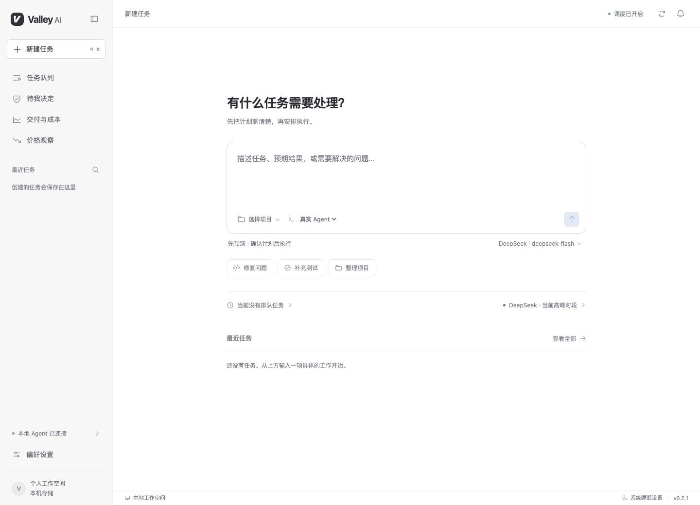
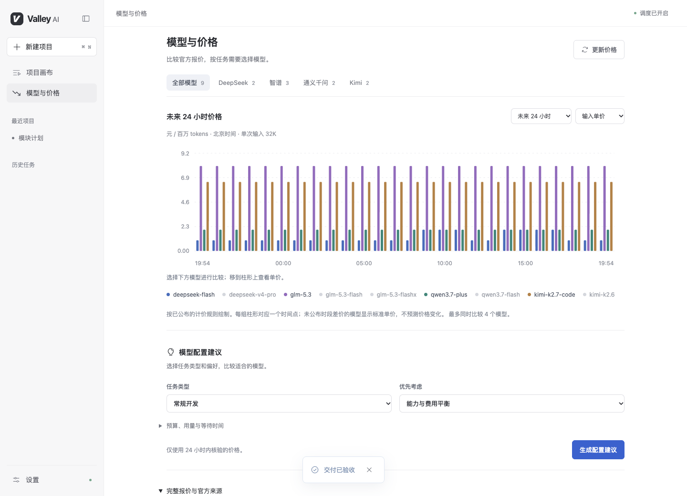

先把任务想清楚
把对话整理成执行步骤、验收标准和风险。继续讨论，直到计划符合预期。

描述任务，选择项目。
从一个具体的需求开始。
你可以继续补充要求、调整计划。
确认任务包以后，Agent 才会开始修改代码。
把对话整理成执行步骤、验收标准和风险。继续讨论，直到计划符合预期。
结合优先级、截止时间、模型单价和电力成本安排队列。每 30 分钟查询 DeepSeek 官方价格。
命令权限与未确认的问题进入审批。预先确认且文字完全匹配的问题，可以自动回复。
在独立工作目录执行，保留变更和真实命令记录。完成后查看结果、用量与成本估算。
价格有来源，更新时间可查看。过期的价格不会继续用于启动新的 DeepSeek 任务。
排程与费用均为估算，不保证最低账单；实际收费以服务商账单为准。
查看 DeepSeek 官方定价 ↗
来自应用的实际截图 · 价格会随官方更新
任务期间阻止电脑空闲睡眠，允许屏幕关闭；使用系统锁屏保护桌面。任务进展和需要处理的请求都保留在应用里。
请接通电源并保持应用运行。合盖、手动睡眠、关机与系统更新仍可能中断任务。
Valley AI 0.1.0 · 桌面预览版
在偏好设置中选择 Codex CLI，配置 DeepSeek Key。密钥保存到系统凭据库。
选择已提交且没有未提交修改的 Git 仓库，输入任务并生成计划。
检查计划、时限和预算。任务完成后，在交付页查看结果并验收。